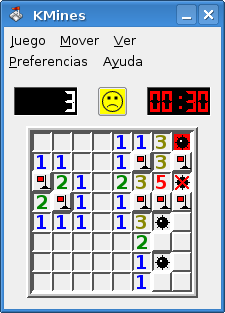

Que es el buscaminas
Buscaminas (nombre original en inglés: Minesweeper) es un videojuego para un jugador inventado por Robert Donner en 1989. El objetivo del juego es despejar un campo de minas sin detonar ninguna.
Reglas
El juego consiste en despejar todas las casillas de una pantalla que no oculten una mina. Algunas casillas tienen un número, el cual indica la cantidad de minas que hay en las casillas circundantes. Así, si una casilla tiene el número 3, significa que de las ocho casillas que hay alrededor (si no es en una esquina o borde) hay 3 con minas y 5 sin minas. Si se descubre una casilla sin número indica que ninguna de las casillas vecinas tiene mina y éstas se descubren automáticamente. Si se descubre una casilla con una mina se pierde la partida. Se puede poner una marca en las casillas que el jugador piensa que hay minas para ayudar a descubrir las que están cerca.
El juego también posee un sistema de récords para cada uno de los 4 niveles en el que se indica el menor tiempo en terminar el juego. Los niveles son (para las nuevas versiones):